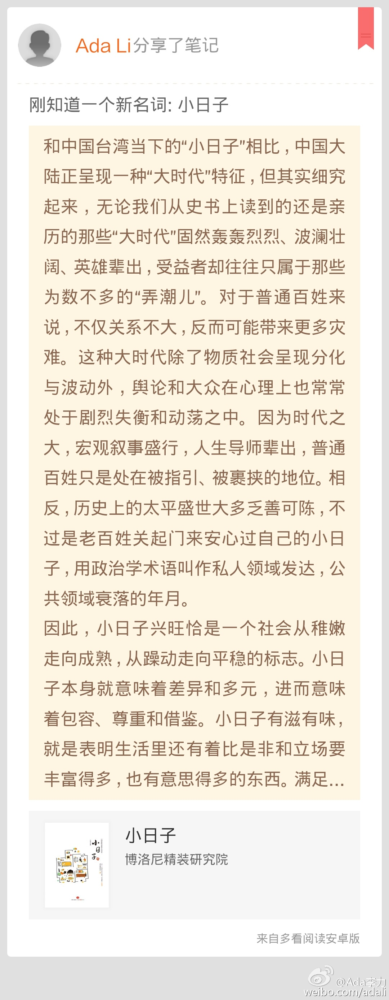

我想自己对拍过的照片很少有满意的，也不大愿意展示给别人。一个原因就是拍得少，另一个原因是不会挑选，凑合的照片有时也发出去，然后自己不满意。//#多看笔记# “真正的优秀摄影师，不只是会拍摄照片，还会挑选照片，他们只... ” 摘自《手机随身拍》@多看阅读
记得伊能静是我大学期间不少男同学心目中的青春偶像，这么多年过去，她似乎模样一直没有改变，所以被称为美丽教主。这本书基本都是她护理身体的各种心得，重点是推荐她觉得不错的各种护理用品，让我这种几日... 摘自《跟身体谈恋爱》@多看阅读 网页链接
刚知道一个新名词: 小日子//#多看笔记# “和中国台湾当下的“小日子”相比，中国大陆正呈现一种“大时代”特征，但其实细究起来，无论我们从史书上读到的还是亲历的那些“大时代”固然轰轰烈烈、波澜壮阔、英雄辈出，受益者却往... ” 摘自《小日子》@多看阅读 网页链接 
假期适合读书，但最近很不想读大部头和严肃的书籍，于是把@多看 上“生活”分类下的书目，一一翻过去，一天可以读五六本，蛮有意思的。很多东西是小时或者青春期应该学会的知识，但我忙于学习和工作，生活倒是一直忽视凑合的状态，现在补课也不算晚。
这个世界上有很多女性，在拥有让人羡慕的美貌身材之外，还有个足够聪明智慧的脑子，马艳丽应该算其中一个吧。//#多看笔记# “人生有两大乐事：一是在追求之中备感充实，二是在拥有之后细细品味。 女人要有一份能养得起自己的事... ” 摘自《时尚百物》@多看阅读 网页链接